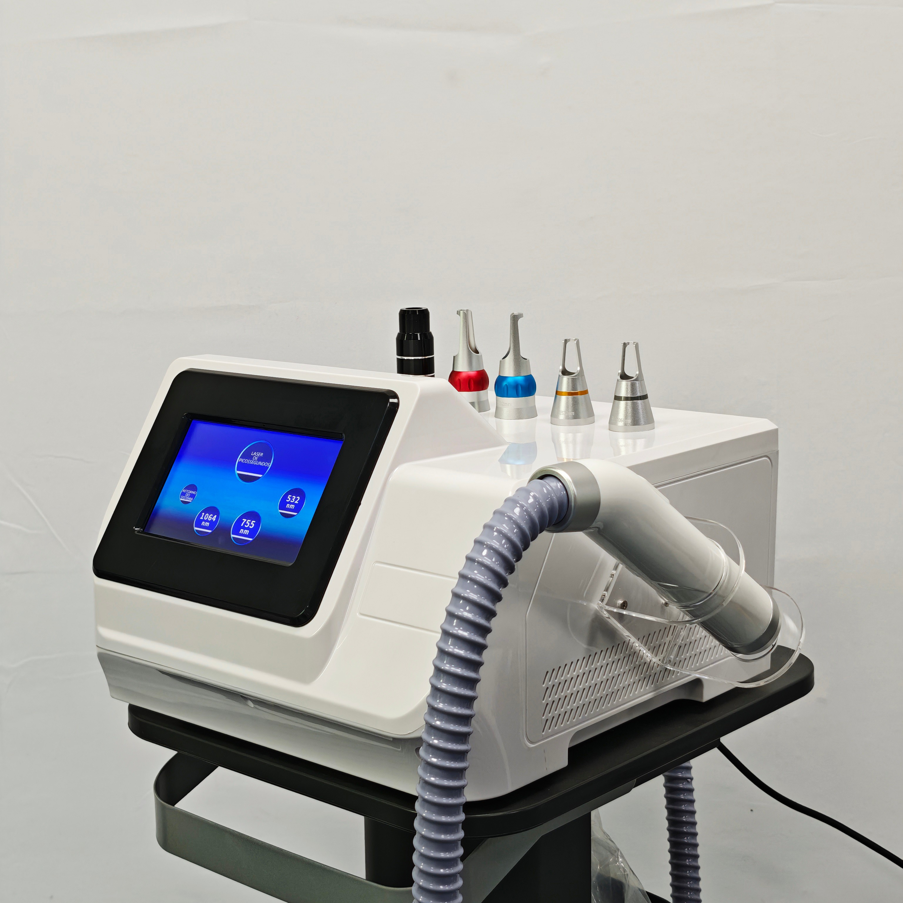
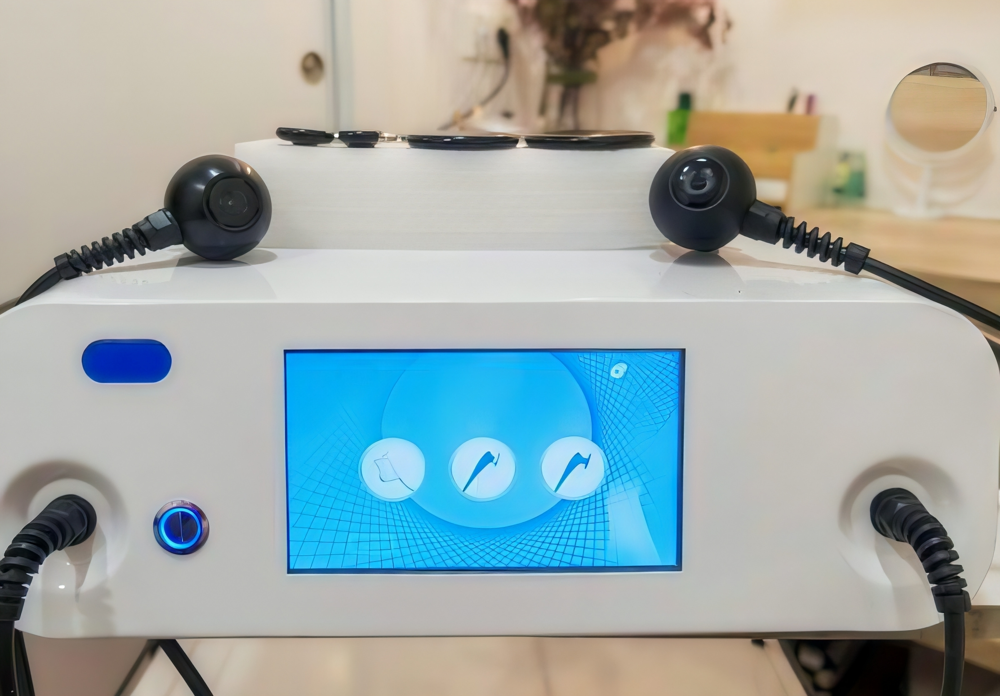

Tecnología en Belleza
Descubre las herramientas y tecnologías que utilizamos para ofrecerte los mejores tratamientos.
Láser Diodo
Depilación Permanente de Alta Eficiencia
El Láser Diodo Tressa es un sistema avanzado de depilación profesional diseñado para ofrecer resultados eficaces, seguros y duraderos en todo tipo de piel. Su tecnología de diodo de alta potencia garantiza una eliminación del vello rápida, cómoda y progresiva.
Tecnología de última generación
Utiliza una longitud de onda óptima que actúa directamente sobre el folículo piloso, debilitándolo desde la raíz sin dañar la piel circundante. Este proceso permite una depilación progresiva, permanente y apta tanto para zonas corporales como faciales.
Beneficios principales
- Resultados visibles desde las primeras sesiones
- Eficaz en todos los fototipos de piel, incluyendo pieles bronceadas (según parámetros)
- Tratamientos rápidos y confortables
- Máxima seguridad gracias a su sistema de enfriamiento
- Apto para uso profesional continuo
- Reducción de folículos resistentes y vello fino
- Minimiza irritaciones y enrojecimiento post-tratamiento
Ideal para:
- Depilación corporal completa
- Depilación facial
- Zonas sensibles (axilas, línea del bikini)
- Reducción de vello grueso, fino y resistente
- Personas que buscan tratamientos rápidos y seguros
Comodidad y seguridad en cada sesión
El sistema incorpora un avanzado mecanismo de refrigeración que mantiene la piel fresca durante el tratamiento y reduce significativamente la sensación de calor. Esto permite sesiones más agradables y altamente tolerables, incluso en áreas delicadas.
Resultados y frecuencia
Los resultados son visibles desde la primera sesión, pero se recomienda realizar entre 6 y 10 sesiones para lograr una depilación definitiva según el tipo de vello y zona tratada. Cada sesión dura entre 20 y 45 minutos dependiendo del área.
Por qué elegir el Láser Diodo
Combina rapidez, eficacia y máxima seguridad. Gracias a su sistema de enfriamiento integrado y tecnología avanzada, ofrece resultados profesionales con comodidad, incluso en las pieles más sensibles.

Láser Picosegundos
Láser Portátil de Picosegundos - Eliminación Profesional de Tatuajes y Manchas
Nuestro equipo láser de Picosegundos es una tecnología avanzada diseñada para la eliminación segura y eficaz de tatuajes, manchas y lesiones pigmentarias. Gracias a su sistema de dos cabezales no invasivos y a su alta precisión, ofrece resultados rápidos sin dañar la piel circundante.
Beneficios
- Eliminación de tatuajes de forma segura y rápida.
- Reducción visible de manchas y lesiones pigmentarias.
- Mejora la textura y luminosidad de la piel.
- Tratamiento no invasivo y con mínima molestia.
- Compatible con todo tipo de piel y pigmento.
Tecnología
Trabaja a velocidades ultrarrápidas, fragmentando los pigmentos en partículas extremadamente pequeñas que el cuerpo elimina de manera natural a través del sistema linfático. Su acción selectiva actúa únicamente sobre el pigmento, preservando la estructura de la piel y evitando daños en el vello.
Indicaciones
Recomendado para personas que desean eliminar tatuajes antiguos, manchas solares, léntigos o marcas superficiales. No se recomienda para áreas con heridas activas o infecciones cutáneas. Es ideal combinarlo con protección solar y cuidados post-tratamiento.
Pasos
- Eliminación de tatuajes
- Despigmentación de manchas y léntigos
- Corrección de cejas tatuadas (cejas grises o verde-azuladas)
- Tratamientos de rejuvenecimiento facial
- Mejora de textura y luminosidad de la piel
- Reducción de cicatrices y marcas superficiales
- Estimulación de colágeno y regeneración cutánea
Resultados y frecuencia
Los resultados suelen ser visibles desde la primera sesión, aunque la mayoría de los tratamientos requieren entre 3 y 6 sesiones para resultados óptimos. Cada sesión dura entre 15 y 45 minutos dependiendo del área a tratar.
Por qué elegir el Láser Picosegundos
Combina precisión, seguridad y eficacia. Su tecnología avanzada permite tratamientos más rápidos, cómodos y con menos sesiones que los métodos tradicionales. Además, está supervisado por profesionales altamente capacitados, garantizando la máxima seguridad para la piel.
Radiofrecuencia
Reafirmación y Remodelación Corporal Avanzada
La Radiofrecuencia 448 kHz utiliza tecnología estética de última generación diseñada para mejorar la firmeza, textura y apariencia de la piel. Su frecuencia especifica de 448 kHz permite trabajar de forma profunda y controlada, favoreciendo la regeneración natural de los tejidos y proporcionando resultados visibles desde las primeras sesiones.
¿Cómo funciona?
Esta tecnología actúa mediante la emisión de energia de radiofrecuencia en tejidos superficiales y profundos. El calor controlado estimula la actividad natural de la piel, ayudando a mejorar su aspecto, su elasticidad y su firmeza. Además, favorece la apariencia de xonas con flacides, acumulación localizada o pérdida de tonocidad.
Beneficios estéticos
- Mejora del aspecto de la piel flácida
- Reafirmación de rostro y cuerpo
- Mejora en la apariencia de arrugas finas y líneas de expresión
- Efecto lifting sin cirugía
- Mejora visible de la piel cutánea
- Sensación de piel más tersa y tonificada
- Tratamientos corporales para mejorar el contorno
Aplicaciones:
- Rostro: mejillas, óvalo facial, papada, contorno de ojos
- Cuerpo: abdomen, brazos, glúteos, muslos, cintura
- Zonas con alta firmeza o pérdida de tono
Tratamientos seguros y confortables
La Radiofrecuencia 448 kHz ofrece sesiones agradables gracias a su calor profundo controlado. Su sistema esta diseñado para trabajar con precisión, adaptándose a cada tipo de piel y área tratada.
